How can CRISPR based approaches reduce cattle methane emissions while considering how climate change and its solutions affect different communities, agricultural systems, and environments?
CATTLEMETHANE
ABOUT THE PROJECT
HIDDEN CLIMATE COST
This project explores the relationship between cattle
agriculture, methane emissions, microbial biology,
emerging biotechnology, and climate change.
Using GIS, scientific research, molecular biology, and
visual storytelling, we investigate where cattle
production occurs, how methane is produced inside the
rumen, and whether emerging technologies such as CRISPR
could contribute to future approaches for reducing
methane emissions.
We also consider the people and agricultural communities
connected to these systems, asking who has access to new
technologies, who benefits from them, and how new
approaches can be developed responsibly and fairly.
COURSESYN 100
FOCUSCATTLE + METHANE
METHODGIS + BIOLOGY + VISUAL STORYTELLING
02 • CLIMATE PROBLEM
Methane is a climate problem.
Cattle methane is produced through a biological
process inside the rumen, but once methane enters
the atmosphere, its effects extend far beyond the
individual animal.
01 • WHY METHANE MATTERS
A small amount of gas can have a large effect on climate.
Methane, or CH4, is a greenhouse gas. Like CO2,
it absorbs heat in the atmosphere and contributes
to global warming. Methane is especially important
because it traps much more heat than CO2 over a
100 year period.
Methane also stays in the atmosphere for a much
shorter time than CO2. Its atmospheric lifetime is
about 12 years, while the effects of CO2 can last
for hundreds to thousands of years.
This does not mean methane is more important than
CO2 in every way. CO2 remains the largest driver of
long term warming. Instead, methane represents an
important opportunity for reducing the rate of
warming in the near term.
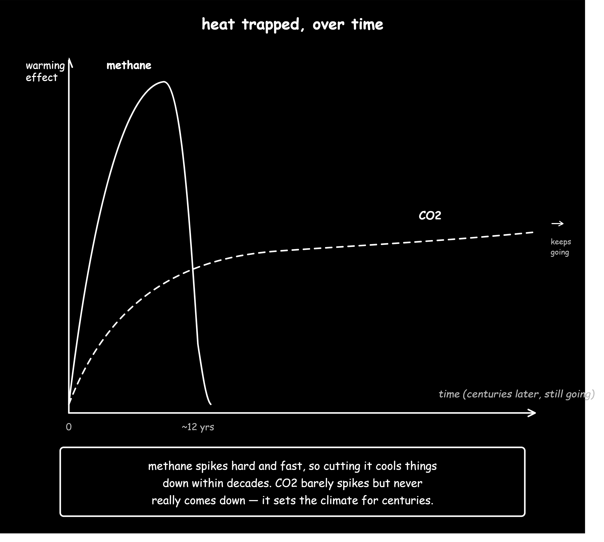
METHANE AT A GLANCE
CLIMATE DATA
28×
THE WARMING EFFECT
Over 100 years, methane has about
28 times the warming potential of
the same amount of CO2.
METHANE
Atmospheric lifetime of about
12 years.
CO2
Can influence climate for
hundreds to thousands of years.
Agriculture contributes a significant share of
global greenhouse gas emissions, and livestock
production is an important source of methane.
Cattle produce methane mainly because of the
microorganisms living inside their digestive system.
Inside the rumen, microbes break down plant
material through fermentation. Methanogenic
archaea use some of the products of this process
and produce methane. The methane then leaves the
animal, primarily through belching.
One cow producing methane may seem like a small
event. The climate significance comes from the
scale of cattle production. When this biological
process occurs across large livestock populations,
the combined emissions become part of the global
greenhouse gas problem.
03 • GLOBAL PATTERNS
Where these emissions come from may be surprising.
Cattle are one of the largest sources of methane
from livestock. Agriculture as a whole contributes
about 14.5 percent of global greenhouse gas
emissions, and cattle are a major part of the
methane produced through livestock digestion.
Methane is much more powerful than CO2 at trapping
heat over a 100 year period. At the same time,
methane breaks down much faster in the atmosphere.
This matters because reducing methane emissions
today could help slow the rate of warming sooner,
while reductions in CO2 remain essential for
limiting long term climate change.
Where these emissions come from may be surprising.
Wealthier countries in the Global North, especially
the United States and Europe, produce much of the
world's milk and a large amount of its beef. However,
a large share of cattle related methane emissions
comes from countries in the Global South.
As of 2022, about 71 percent of dairy emissions
and 77 percent of beef emissions came from
non OECD countries. This difference is connected
to differences in agricultural systems, production
efficiency, animal productivity, feed, and access
to resources.
In the United States, cattle account for about
2 percent of total direct greenhouse gas emissions.
Looking at these numbers together shows why the
climate problem cannot be understood only by asking
where cattle are raised. We also need to understand
how agricultural systems differ between regions
and how emissions are connected to the communities
that depend on those systems.
THE BIGGER PICTURE
Methane is one part of the
greenhouse gas problem.
DATA
AGRICULTURE
14.5%
Estimated share of global greenhouse
gas emissions associated with
agriculture.
IMPORTANT
Agriculture includes many sources of
greenhouse gases. Cattle methane is
one part of this larger system.
Agriculture produces greenhouse gases through
several processes, including livestock methane,
manure management, fertilizer use, land use change,
and other agricultural activities. This means
cattle methane should be understood as one part
of a larger climate system.
04 • SPATIAL DATA
Where is dairy methane concentrated?
CALIFORNIA
The patterns described at the global scale become easier to see
when we look at California. Dairy production is concentrated in
specific regions of the state, creating corresponding
concentrations of methane emissions.
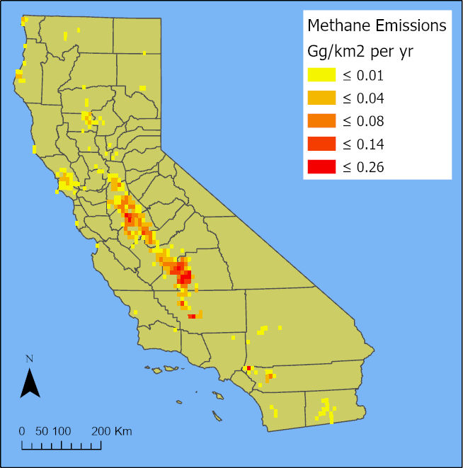
California dairy methane emissions, 2019.
Estimated annual methane emissions from dairy farms are shown
across California. The map combines methane from enteric
fermentation and manure management at approximately
10-kilometer spatial resolution.
ENTERIC FERMENTATION
Rumen microbes produce methane as they break down feed.
At the scale of California's dairy industry, this biological
process becomes a significant source of atmospheric methane.
MANURE MANAGEMENT
Methane is also produced when manure decomposes under
oxygen-limited conditions. The map therefore represents
both biological methane production inside cattle and
emissions associated with managing their waste.
DATASET SCALE
1,326 California dairy farms
Estimated emissions for 2019 • approximately 10 km resolution
DATA SOURCE
Marklein, A. R., et al. (2021).
Methane Emissions from Dairy Sources (Vista-CA),
State of California, USA, 2019.
ORNL DAAC.
05 • WHY LOCATION MATTERS
Where cattle are raised matters.
Cattle are raised in places where people depend
on agriculture for food, jobs, and income. These
systems also depend on land, water, feed, labor,
and other resources.
Because of this, reducing methane is not only
about changing what happens inside the cow.
Any new approach would also need to work within
the agricultural systems where cattle are raised.
Mapping helps us see these differences from place
to place. It connects the global climate problem
to the actual regions, farms, and communities
where cattle production takes place.
06 • WHY REDUCE METHANE?
Cutting methane can help slow warming sooner.
Because methane remains in the atmosphere for a
much shorter time than CO2, reducing methane
emissions can have a relatively fast effect on
the amount of methane in the atmosphere.
This does not mean methane reductions can replace
CO2 reductions. Both are necessary. CO2 determines
much of the long term warming trajectory, while
methane reductions can help slow the rate of
warming in the near term.
01
REDUCE METHANE
Less methane enters the atmosphere.
→
02
LESS HEAT TRAPPED
The atmosphere contains less
methane to trap heat.
→
03
SLOWER NEAR TERM WARMING
Reducing methane can help slow
the rate of warming.
The climate problem begins to look
different when we zoom in.
We can see methane in atmospheric data and
maps, but its source is biological. To understand
how methane might be reduced, we need to move
from the scale of regions and climate systems
down to the scale of the rumen and its microbes.
🌎
CLIMATE
CH4
METHANE
◉
RUMEN
🦠
MICROBES
If methane is produced by microbes inside the
rumen, then understanding those microbes may
help researchers identify new ways to reduce
emissions.
That brings us to the next part of the project:
the biology of the rumen.
SOURCES + REFERENCES
Following the evidence.
The climate science in this section is based on
scientific and institutional sources. Additional
sources will be added as the GIS data and regional
emission estimates are finalized.
Cattle related methane emissions are connected to
biology, agriculture, climate change, land use,
and the communities that depend on these systems.
THE QUESTION
How can CRISPR based approaches help address
cattle related methane emissions while considering
the broader climate crisis and the communities
most affected by it?
01 • THE CONNECTION
A process inside the cow can become a climate issue.
Cattle digest plant material through fermentation
in the rumen, a specialized digestive chamber filled
with microorganisms. Some of these microorganisms,
called methanogenic archaea, produce methane as part
of their metabolism.
Methane leaves the animal and enters the atmosphere.
When this process occurs across millions of cattle,
a biological process occurring inside individual
animals contributes to a much larger climate problem.
02 • INTERSECTIONALITY
Climate change does not affect every community
in the same way.
Cattle production is part of a larger system that
connects animals, agriculture, climate, land, labor,
and communities. Because these systems overlap,
the effects of climate change can also overlap.
A region can simultaneously be an important area
for livestock production, experience greater heat
stress, and contain communities with higher levels
of social vulnerability.
The map below helps us see those relationships
spatially. It does not suggest that every place with
cattle is vulnerable, or that every vulnerable
community experiences the same climate pressures.
Instead, it highlights specific places where these
factors intersect.
GIS • CLIMATE + COMMUNITIES
Cattle, Climate Stress,
and Community Vulnerability
ARC GIS
This map overlays livestock density, heat severity,
and the CDC Social Vulnerability Index, showing
where cattle production, climate stress, and
community vulnerability intersect.
These areas matter because climate interventions
affect real places where people already live and
work. Agricultural systems already face environmental
pressures, and different communities may have
different levels of access to new technologies.
This changes the question we ask about CRISPR.
It is not enough to ask whether modifying rumen
microbes could reduce methane emissions. We also
need to ask who would have access to that technology,
who would benefit from it, what costs might fall on
agricultural communities, and whether the benefits
of a climate intervention would be distributed fairly.
03 • FROM BIOLOGY TO PEOPLE
The biological process is only one part of the story.
Methane begins with a biological process inside the
rumen, but its effects extend beyond the animal.
Cattle production depends on land, water, feed,
labor, and infrastructure, connecting microbial
processes to larger agricultural systems.
As climate change increases pressure on agricultural
systems, the consequences can extend to the people
who work within them and the communities that depend
on them. This creates a connection between a process
at the microbial scale and problems experienced at
the community and global scales.
Understanding these connections allows us to ask a
larger question: if biology can contribute to the
climate problem, can biology also become part of
the solution?
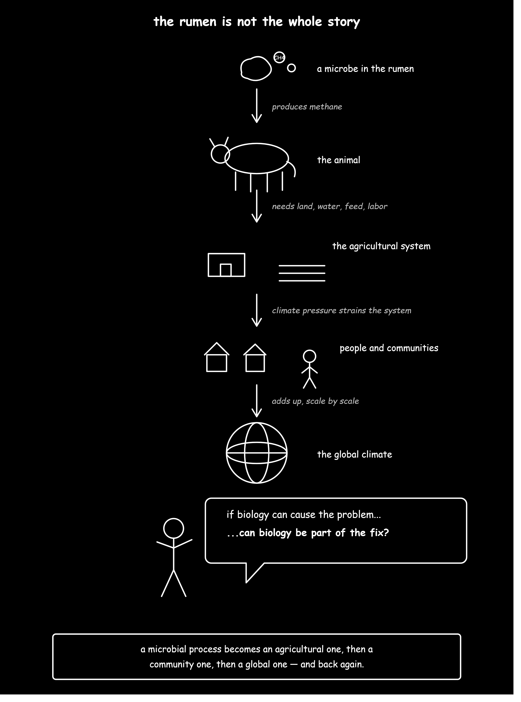
Our visual illustrates how methane connects processes
inside the rumen to larger climate and community impacts.
THE SYSTEM
From biology to climate justice.
Understanding where methane comes from is only
the beginning. To evaluate whether biological
interventions could help reduce emissions,
we need to understand the larger systems they
would enter.
04 • SOLUTIONS
Make the solution work on the farm.
California already has a methane reduction target,
agricultural climate funding, and research programs.
The next step is to launch a small California pilot
testing 3-NOP on real farms before considering wider
options.
WHY CALIFORNIA?
The state already has a reason to act.
California's SB 1383 requires methane emissions from
the dairy and livestock sector to be reduced
40% below 2013 levels by 2030.
Dairy and livestock currently produce more than half
of the state's methane emissions.
40%
2030 TARGET
Required methane reduction below
2013 levels.
>50%
STATE METHANE
Comes from California's dairy
and livestock sector.
$9.46M
ENTERIC RESEARCH
CDFA awarded this amount across
seven LEMER-RP projects.
THE OPPORTUNITY
California is already funding methane research.
This proposal builds on that existing system
instead of creating an entirely new program.
THE SOLUTION ALREADY EXISTS
3-NOP targets methane at its source.
3-NOP (3-nitrooxypropanol) is a feed additive that
interferes with methyl-coenzyme M reductase (MCR),
the enzyme rumen microbes use to produce methane.
Research shows that 3-NOP can substantially reduce
enteric methane emissions from dairy cattle.
HOW IT WORKS
3-NOP and methane production
SCIENCE
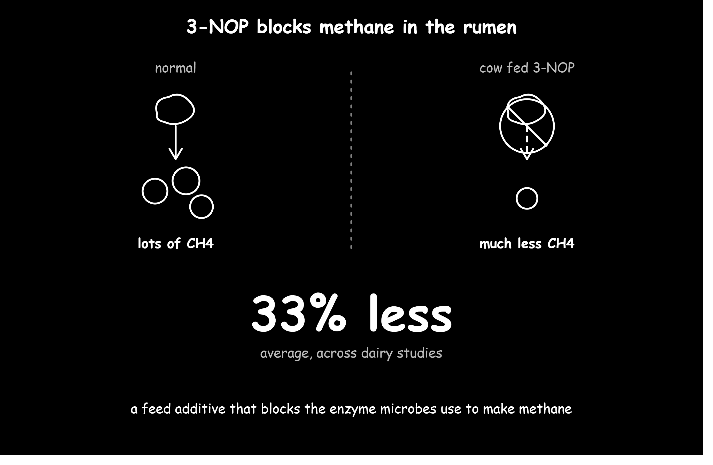
Published research:
A meta-analysis of 13 studies and 14 experiments
found that 3-NOP reduced methane production by an
average of 32.7% in dairy cattle.
Test 3-NOP on California farms. A small pilot
can determine whether the methane reduction
seen in research is practical, measurable,
and cost-effective under real farm conditions.
THE PROPOSAL
Test before expanding.
California would launch a small, publicly funded pilot
to test 3-NOP under normal farm conditions. The pilot
would measure methane reduction, cost, animal performance,
and producer feasibility before California considers
expanding the program.
THE ACTION
Fund 10–20 California farms to test 3-NOP, measure the
results, and independently verify the evidence before
scaling.
PROPOSED PILOT
10–20 California farms
PROPOSED
01
SELECT
Include different farm sizes and
production conditions.
02
TEST
Use 3-NOP under normal farm feeding
conditions and follow all applicable
requirements.
03
MEASURE
Track methane, cost, animal performance,
feed, and workload.
04
VERIFY
Independently review the results before
expansion.
WHY PUBLIC FUNDING?
Reduce the risk of trying something new.
Farmers should not have to absorb the full cost of
testing 3-NOP under real farm conditions. Public funding
can cover eligible pilot and measurement costs while
researchers determine whether the strategy actually
works.
This also gives California something valuable:
real world evidence about methane reduction,
cost, animal performance, and feasibility before
committing to larger-scale spending.
CALIFORNIA
FUND
Pilot grants and technical support.
FARMERS
IMPLEMENT
Follow approved feeding and
recordkeeping requirements.
RESEARCHERS
MEASURE
Collect methane and farm-performance data.
INDEPENDENT REVIEW
VERIFY
Confirm that reported reductions
are supported by evidence.
EXISTING PRECEDENT
CDFA already funds dairy methane reduction through
programs including LEMER-RP, AMMP, DDRDP, and
CLIM3ATE-RP. The proposal extends this existing
infrastructure toward carefully measured
enteric-methane demonstrations.
SMALL FARM ACCESS
Access has to be designed into the program.
A program can technically be open to every farm while
still favoring larger operations with more money,
staff, and grant-writing capacity.
RESERVE
Set aside pilot funding for smaller producers.
UPFRONT
Reduce the need for farmers to pay large
costs before reimbursement.
TECHNICAL HELP
Provide application, feeding, measurement,
and recordkeeping support.
SHARE
Let regional groups share equipment and
technical staff.
THE PRINCIPLE
The goal is not simply adoption. The goal is
equitable access to the same opportunity to test
and benefit from the technology.
GIS • WHERE TO START
Target regions, not just individual farms.
With ArcGIS we can identify regions where cattle
production and disadvantaged communities overlap,
helping California determine where to begin recruiting
farms for the 3-NOP pilot.
PILOT TARGETING
Potential California pilot regions
ARCGIS
What the map shows:
Darker blue = higher cattle production.
Red = disadvantaged communities identified by
CalEnviroScreen 5.0. Areas where the two overlap
show where high cattle production and disadvantaged
communities are located in the same area.
Potential pilot regions:
Fresno and Imperial Counties show some of the
clearest overlap, making them potential starting
points for a targeted methane reduction pilot.
A CLOSER LOOK
A Closer look at the pilot regions
3D GIS
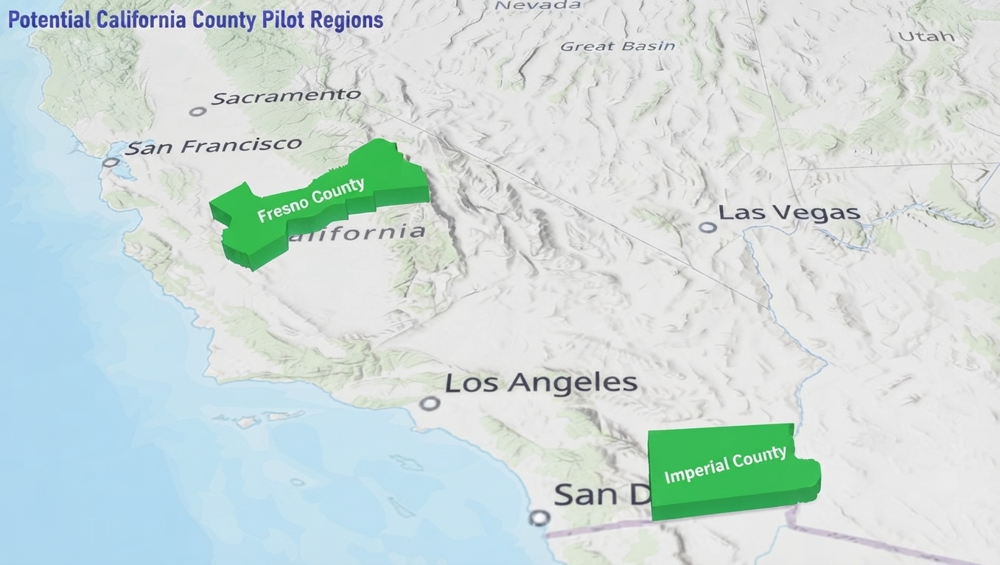
A closer look at potential California regions
where cattle production and disadvantaged communities
overlap. Fresno and Imperial Counties are highlighted
as potential starting points for a targeted methane
reduction pilot.
THE SCALE TRIAL • HYPOTHETICAL
Test it. Measure it. Then decide.
Before expanding 3-NOP beyond the pilot, California
could require measurable benchmarks for emissions,
cost, animal performance, data quality, and producer
feasibility.
The values below are
hypothetical proposal benchmarks,
not results from an existing trial.
MOCK PILOT RESULTS
Example: 15 farms • 12 months
HYPOTHETICAL
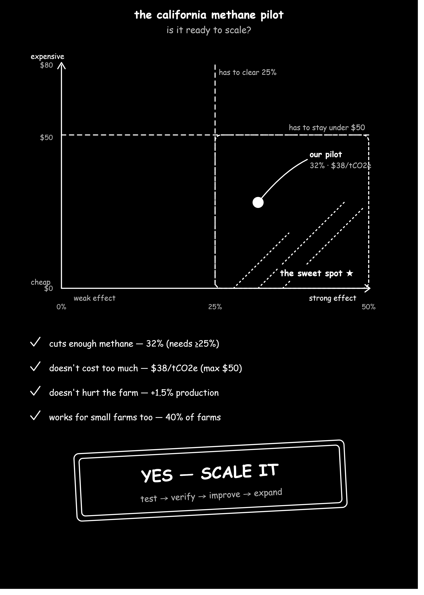
SCALE RULE
If the pilot meets its predefined emissions,
cost, safety, data-quality, and feasibility
criteria, California could move to a larger
demonstration. If not, improve or stop the approach.
California gets evidence
before committing to scale.
The state already has a methane target, funding
programs, agricultural research institutions,
and experience supporting methane-reduction
projects. A targeted pilot uses that existing
infrastructure to answer the remaining question:
can an enteric methane strategy reduce emissions
at a measurable cost while remaining practical
for producers?
If it works, California has evidence to justify
expansion. If it does not, the state learns what
needs to change before spending more money.
A cow's digestive system contains a complex
microbial community that helps break down food.
Some of those microbes produce methane as part
of their normal metabolism.
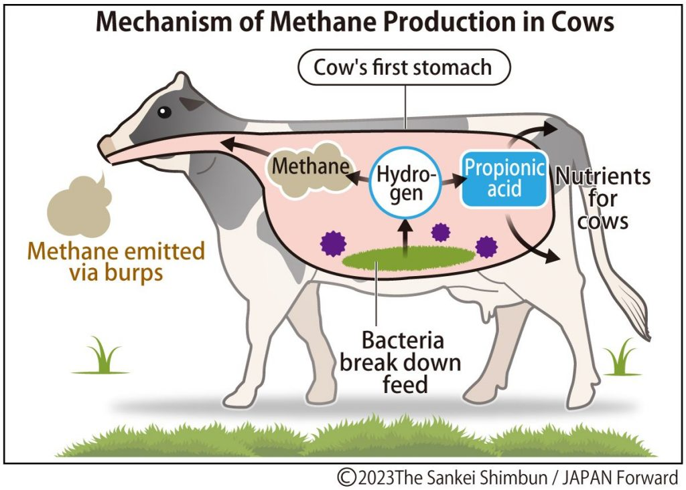
The rumen is a fermentation chamber where microbial
communities break down plant material during digestion.
Source: Mrutu et al. (2025),
Frontiers in Animal Science.
DOI: 10.3389/fanim.2025.1489212.
01 • INSIDE THE RUMEN
What the cow eats becomes fuel for a microbial community.
Cattle eat plant material that they cannot digest
entirely on their own. The rumen acts as a large
fermentation chamber where microorganisms break
down components of the feed.
During this process, different microbes consume
the products made by other microbes. Methanogenic
archaea use some of these products, including
hydrogen and carbon compounds, to produce methane.
The methane eventually leaves the animal, primarily
through belching. What begins as digestion inside
the rumen therefore becomes a source of greenhouse
gas emissions outside the animal.
FOOD
plant material
→
MICROBIAL FERMENTATION
food is broken down
→
METHANOGENIC ARCHAEA
methane production
→
CH4
methane
02 • WHY METHANE MATTERS
Methane is a small molecule with a large climate impact.
Methane is a powerful greenhouse gas that traps
substantially more heat than CO2 over shorter
time periods. The United Nations Environment
Programme reports that methane is responsible
for approximately 30% of the rise in global
temperatures since the Industrial Revolution.
Methane also remains in the atmosphere for a much
shorter time than CO2. That combination makes
methane reduction especially important for slowing
near term warming.
THE CLIMATE CONNECTION
UNEP
30%
of the rise in global temperatures
since the Industrial Revolution
is attributed to methane.
Cattle are not distributed evenly across the
landscape. Production is concentrated in particular
agricultural regions, meaning methane emissions are
also concentrated in specific places.
Knowing where cattle are helps us connect the
biological source of methane to the physical
landscapes where emissions occur.
This map provides the spatial foundation for examining
where cattle production occurs and how livestock
systems overlap with agricultural land, resources,
methane emissions, and communities.
04 • CRISPR + THE RUMEN MICROBIOME
What if we could change the microbes?
The rumen contains a complex community of
microorganisms that depend on one another.
Scientists are investigating whether specific
members of this community could eventually be
genetically altered to change how they process
nutrients and produce methane.
This is where CRISPR becomes relevant. CRISPR
can be used as a tool for making targeted changes
to DNA. Instead of editing the cow itself,
researchers are investigating whether microbial
genomes could be modified to alter methane
production within the rumen.
The long term idea is to understand which
microbes and genetic instructions are involved
in methane production and determine whether
changing them could reduce methane without
disrupting the larger microbial community that
helps the cow digest its food.
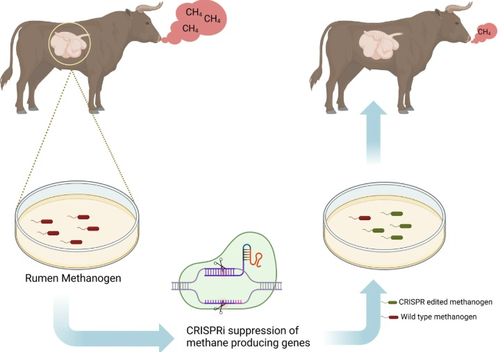
Possible in vitro approach for gene editing of
rumen methanogens. Methanogens could be cultured
outside the animal, genetically modified using
CRISPRi, and potentially reintroduced into the
rumen.
Source: Mrutu et al. (2025), Figure 5,
Frontiers in Animal Science.
Adapted from Subedi et al. (2022).
DOI: 10.3389/fanim.2025.1489212.
UC DAVIS + UC BERKELEY
Engineering the microbiome
A major UC collaboration involving
researchers at UC Davis and the Innovative
Genomics Institute is investigating CRISPR
tools for complex microbial communities.
UC Davis researchers Matthias Hess and
Ermias Kebreab are working with Jennifer
Doudna and Jill Banfield's team at UC
Berkeley to develop and test microbial
engineering approaches related to climate
and health.
This is an emerging research strategy.
A CRISPR based methane reduction treatment
is not currently an established treatment
used in cattle.
05 • THE MOLECULE
The enzyme at the final step.
Methanogenic archaea use a series of biochemical
reactions to produce methane. The enzyme methyl
coenzyme M reductase, known as MCR, catalyzes the
final step in this process.
Looking at MCR lets us move from the scale of the
whole cow down to the molecular level and see one
of the proteins directly involved in methane
production.
MOLECULAR STRUCTURE
Methyl coenzyme M reductase
MOL*
LOADING MOLECULAR STRUCTURE
MCR catalyzes the final biochemical step
of methane production in methanogenic
archaea.
Understanding the molecules involved in methane
production helps researchers identify where methane
could potentially be reduced. Molecular tools such
as CRISPR connect biology to larger questions about
agriculture, climate change, and society, reminding
us that scientific innovations must also consider
who benefits, who faces potential risks, and who has
access to emerging technologies.
07 • THE BIGGER PICTURE
From the rumen to the climate.
A process happening inside a cow can connect
to a global climate problem.
🐄
COW
◉
RUMEN
🦠
MICROBES
CH4
METHANE
🌎
CLIMATE
Millions of cattle produce methane through
the activity of microbes in their digestive
systems. When those emissions are repeated
across agricultural systems around the world,
a process occurring at the scale of a microbial
community becomes part of the global climate
system.
05 • SCALING THE SOLUTION
From pilot to program.
Testing methane reduction on individual farms is only
the beginning. Scaling requires a system for enrollment,
measurement, verification, funding, and open data.
01PILOT
Test
→
02VERIFY
Measure
→
03STANDARDIZE
Document
→
04SCALE
Expand
01 • WHAT THE EVIDENCE SHOWS
3-NOP has demonstrated methane-reduction potential.
Research has found substantial reductions in enteric
methane with 3-NOP. However, results vary depending
on cattle, diet, dose, and management conditions.
30.6%
reduction in daily methane emissions
Beef-cattle study
VARIABLE
response across different production systems
Research literature
TEST
real-world performance before expansion
Scaling principle
02 • THE SCALING BLUEPRINT
What has to exist for expansion?
01
Enrollment
Recruit farms and establish participation
requirements.
02
Technical Support
Help producers implement the intervention
correctly.
03
Measurement
Use consistent methods to evaluate methane
emissions.
04
Open Data
Use standardized, documented data formats.
05
Verification
Independently evaluate reported outcomes.
06
Funding
Reduce financial barriers to participation
and measurement.
03 • OPEN DATA + OPEN SOURCE
Build the information system openly.
Scaling creates a second challenge: data. If farms
measure and report results differently, comparing
outcomes becomes difficult.
FARM
location
herd
management
→
STANDARDIZE
fields
units
metadata
→
ANALYZE
reproducible
workflows
→
VERIFY
quality control
→
REPORT
transparent
results
OPEN INFRASTRUCTURE
CSVGEOJSONGISMETADATAREPRODUCIBLE ANALYSIS
04 • GIS • WHERE TO SCALE
Where should expansion begin?
Scaling should consider more than cattle numbers.
Geography can help identify agricultural regions,
infrastructure, water conditions, and communities
that could be affected by program expansion.
HYPOTHETICAL SCALING PATHWAY
Two pilot counties to potential statewide expansion
This visualization illustrates one possible scaling pathway:
begin with pilot programs in Fresno and Imperial Counties,
compare standardized measurements, and expand only if
independent evidence supports broader implementation.
05 • HOW THE PROGRAM OPERATES
A repeatable implementation cycle.
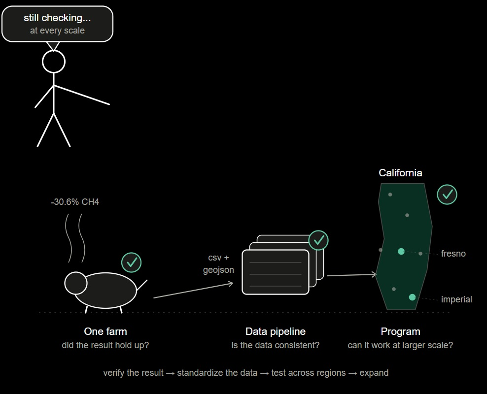
SCALING LOGIC
Verify at every scale.
This illustration represents a repeatable approach to
scaling: verify the result at the farm level, standardize
the data, test the intervention across regions, and expand
only when the evidence supports it.
06 • HYPOTHETICAL SCALING SCENARIO
Start small. Expand with evidence.
This enrollment pathway is hypothetical. It illustrates
how a phased program could expand rather than representing
a current California target.
15Pilot farms
→
50Regional farms
→
250Expansion farms
→
STATEWIDEEvidence-based expansion
07 • THE PAYOFF
Scale only when the evidence supports it.
CLIMATE
Potentially greater methane reductions
across participating operations.
FARMERS
Access to technology, technical support,
and measurement resources.
CALIFORNIA
Real-world evidence on effectiveness,
cost, feasibility, and participation.
SOURCES & PROGRAMS
USDA National Agricultural Statistics Service •
California Department of Food and Agriculture •
California Climate Investments •
Peer-reviewed 3-NOP research •
Open geospatial data
06 • CLIMATE JUSTICE
A climate solution isn't just about methane.
Reducing methane can help address climate change,
but a solution is not automatically equitable.
The people who produce food, work in agriculture,
live near livestock operations, and develop new
technologies can experience different risks,
costs, and benefits.
01 • INTERSECTIONALITY
The same climate intervention can affect people differently.
Climate justice asks us to look beyond the average
outcome. Farmers, agricultural workers, nearby
communities, consumers, researchers, and technology
developers do not have the same resources, risks,
or decision-making power.
These differences can overlap. A community may be
located near intensive agriculture while also
experiencing economic disadvantage, environmental
burdens, limited political influence, or reduced
access to resources. These overlapping conditions
can shape who experiences the benefits and costs of
a climate intervention.
FARMERS
May face the cost of adopting new technologies,
changing management practices, or collecting
additional data.
WORKERS
May experience climate and occupational risks
differently from farm owners and operators.
COMMUNITIES
May experience multiple environmental burdens
associated with intensive agricultural regions.
TECHNOLOGY
New interventions may create benefits for some
groups while creating financial or regulatory
barriers for others.
THE JUSTICE QUESTION
Who receives the benefits, who carries the costs,
who faces the risks, and who gets to participate
in deciding what happens?
02 • DATA + ENVIRONMENTAL JUSTICE
Location matters because vulnerability is not evenly distributed.
Climate justice can be examined spatially. Instead
of looking only at total cattle production, we can
compare agricultural production with indicators of
socioeconomic and environmental vulnerability.
CalEnviroScreen provides a useful example because
it combines multiple indicators rather than treating
vulnerability as a single variable.
AGRICULTURE
CATTLE PRODUCTION
Indicates where livestock production is
concentrated.
PEOPLE
COMMUNITY CONDITIONS
Socioeconomic indicators help identify
communities with greater vulnerability.
ENVIRONMENT
POLLUTION BURDEN
Environmental indicators provide additional
context for cumulative exposure.
Where agricultural production and vulnerability overlap.
Agricultural production and community vulnerability do not
occur independently. Mapping them together helps identify
places where climate interventions may intersect with
existing inequalities.
GIS • CLIMATE + COMMUNITIES
Cattle, Climate Stress, and Community Vulnerability
ARC GIS
This map overlays livestock density, heat severity,
and the CDC Social Vulnerability Index, showing where
cattle production, climate stress, and community
vulnerability intersect.
USDA • 2022 CENSUS OF AGRICULTURE
California's Livestock Landscape
R + PLOTLY
California's livestock industry varies substantially
across counties. This interactive visualization compares
cattle density, cow and heifer inventory, cattle sales,
and the share of cattle represented by cows and heifers.
The 3D visualization shows how California counties differ
across multiple dimensions of livestock agriculture.
DATA + METHODS
USDA National Agricultural Statistics Service (NASS),
2022 Census of Agriculture Ag Census Web Maps dataset.
County-level livestock data were analyzed in R using the
Livestock and Animals worksheet.
3-NOP is one potential intervention, but reducing
agricultural methane can involve multiple strategies.
Different approaches have different costs, levels of
scientific maturity, infrastructure requirements,
and potential impacts on producers.
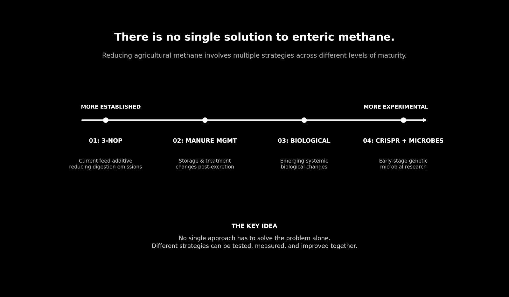
05 • EVALUATING SOLUTIONS
A successful climate solution has to work
for people too.
Methane reduction is important, but it is only one measure
of whether an intervention is successful. A climate solution
should also be evaluated by who can access it, who pays for it,
who faces potential risks, and who gets to participate in
decisions about its use.
THE JUSTICE FRAMEWORK
Instead of asking only
“Does it reduce methane?”,
we can ask six questions about the people and systems
surrounding the technology.
01
Climate impact
Does the intervention produce a measurable
reduction in methane emissions?
02
Cost
Can producers afford to adopt the intervention
without taking on an unreasonable financial burden?
03
Access
Can small and resource-limited farms participate,
or are the benefits concentrated among larger operations?
04
Safety
Have potential effects on animals, workers,
surrounding communities, and the environment
been adequately evaluated?
05
Participation
Do producers, workers, and affected communities
have meaningful opportunities to influence decisions?
06
Evidence
Are decisions supported by transparent data,
scientific evidence, and independent evaluation?
THE POINT
A technology can be scientifically effective
and still produce an inequitable outcome if access,
costs, risks, and decision-making power are distributed
unevenly.
06 • ACCESS TO CLIMATE FUNDING
Climate technology does not enter an equal playing field.
The ability to adopt a climate intervention can depend on
farm size, available capital, technical expertise, labor,
and access to government programs. These differences matter
because a technology can be scientifically effective while
still being difficult for some producers to access.
This is where intersectionality matters.
A producer's experience with a climate program can be shaped
by several conditions at once. A smaller operation with limited
capital and fewer employees may face very different barriers
than a larger operation with greater financial resources and
administrative capacity.
CALIFORNIA • 2023
Where Agricultural Climate Funding Is Going
DATA
The chart shows the total project cost of California
dairy climate projects awarded in 2023, grouped by county.
These projects were supported through California's
dairy methane-reduction programs and included practices
intended to reduce greenhouse gas emissions from dairy
operations.
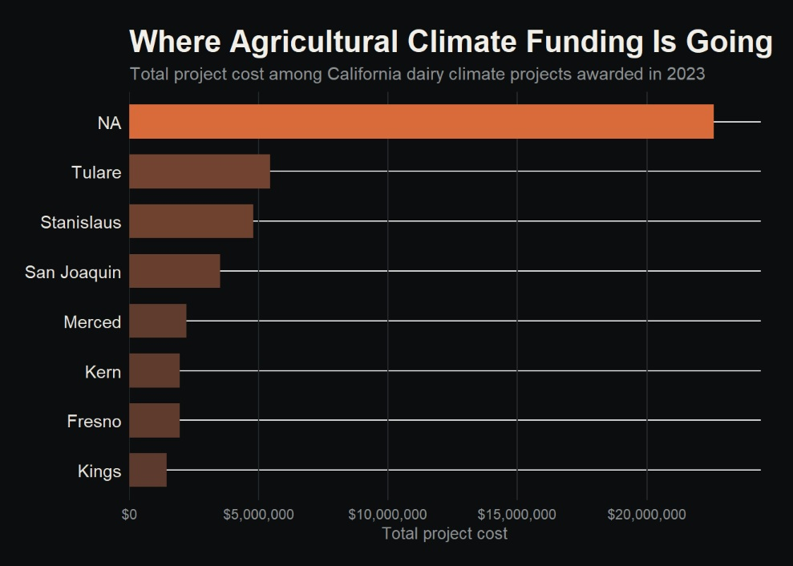
How to read this:
Each bar represents the combined total project cost of
awarded projects within that county. Project cost includes
funding associated with the climate projects and therefore
does not represent methane reduction alone.
WHY THIS MATTERS
Funding patterns are one way to examine access to
climate solutions. A county receiving more project
funding does not automatically mean that every farmer,
worker, or community in that county benefits equally.
Looking at funding alongside farm size, community
conditions,
agricultural employment, and environmental burdens
gives us a more complete picture of climate justice.
2023 Dairy Plus / Alternative Manure Management Program
projects awarded. The dataset was used to calculate
total project cost by county.
FARM SIZE
Larger operations may have more capital and staff
available to apply for and implement climate programs.
FINANCIAL ACCESS
Upfront costs can create barriers for producers with
fewer financial resources.
TECHNICAL CAPACITY
Applying for grants, installing technology, and
measuring results can require specialized knowledge.
COMMUNITY CONDITIONS
Funding should also be considered alongside the
environmental and socioeconomic conditions of the
communities surrounding agricultural operations.
THE INTERSECTIONAL QUESTION
Who has the resources to participate in climate
programs, and who might still be left out?
07 • POWER + PARTICIPATION
Who gets to decide what a climate solution looks like?
Climate solutions should not be designed by scientists,
policymakers, or companies alone. The people who develop
agricultural technologies understand the science, while
the people who live and work within agricultural systems
understand how those technologies affect daily life.
A just approach brings these different forms of knowledge
and experience into the decision-making process.
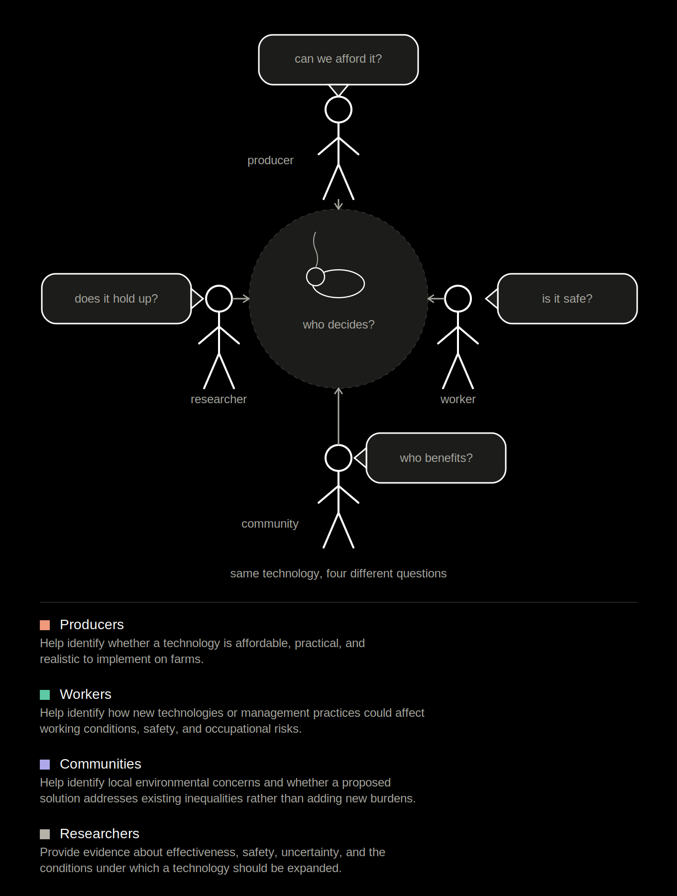
THE ANSWER
No single group should decide alone.
THE BIGGER PICTURE
Climate solutions have to work
for people as well as the climate.
Methane reduction is an important climate goal,
but the pathway used to achieve it matters.
A technology can reduce emissions while still
creating unequal access or distributing costs
unfairly.
An intersectional approach asks us to examine
the entire system: the environmental problem,
the technology, the agricultural workers and
producers who implement it, the communities
affected by agricultural activity, and the
institutions that decide how resources are distributed.
What will future generations inherit from our decisions?
Seven-generations thinking asks us to consider how
decisions made today may affect people far into the
future. This interactive timeline imagines one possible
pathway for agricultural methane reduction—from
research and pilot programs today to the systems
inherited by a seventh future generation.
ILLUSTRATIVE TIMELINE
The years shown here use approximately 25-year intervals
to visualize seven-generations thinking. They are an
illustrative framework for this project, not a prediction
of future conditions or a prescribed timeline.
Research
Agriculture
Knowledge
Communities
2026 • NOW
Testing the solutions
Research, pilot programs, and measurement begin.
Potential methane-reduction strategies are evaluated
for effectiveness, safety, cost, and feasibility.
RESEARCH
PILOTS
PARTICIPATION
20262051207621012126215121762201
THE PATHWAY
From today's decisions to tomorrow's inheritance.
2026 • NOW
Testing the solutions
3-NOP, manure management, biological approaches,
and emerging technologies are evaluated for
effectiveness, safety, cost, and feasibility.
2051 • GENERATION 1
Early adoption
Interventions supported by evidence begin moving
from research and pilot programs into more
agricultural operations.
2076 • GENERATION 2
Regional scaling
Effective strategies expand across agricultural
regions as technical support, infrastructure,
funding, and measurement systems improve.
2101 • GENERATION 3
System change
Methane mitigation becomes increasingly integrated
into agricultural policy, management, research,
and monitoring.
2126 • GENERATION 4
A new normal
Lower-methane practices become part of ordinary
agricultural systems rather than experimental
programs.
2151 • GENERATION 5
Long-term evaluation
Decades of evidence reveal how interventions
affected climate, animals, workers, producers,
and surrounding communities.
2176 • GENERATION 6
Inherited knowledge
New generations inherit scientific knowledge,
infrastructure, data, and agricultural practices
shaped by decisions made decades earlier.
2201 • GENERATION 7
What did we leave behind?
The seventh generation inherits the consequences
of decisions being made today. Success means more
than reducing methane—it means building an
agricultural system that is effective, resilient,
and equitable.
THE SEVEN-GENERATION QUESTION
If future generations could evaluate the decisions
we make today, what would they say we chose to leave
behind?
LOOKING FORWARD
Climate solutions are not only about
what works today.
The technologies discussed in this project may change, improve, or be replaced. What matters is how we make decisions about them: measure the results, listen to the people affected, learn from evidence, and think about who will live with the results.
Seven generations thinking asks us to look beyond the present. The choices we make today can shape farming, communities, and the climate that future generations will experience.
2201
WHAT WILL WE LEAVE BEHIND?
The future is not being evaluated by us.
It will be inherited by someone else.
2201 • ILLUSTRATIVE FUTURE SCENARIO
What could success look like?
If effective methane reduction strategies are adopted,
measured, and improved over generations, methane emissions
could decline over time.
ILLUSTRATIVE METHANE REDUCTION
Lower relative methane emissions over seven generations
2026
BASELINE
2051
REDUCTION
2076
REGIONAL
2101
EXPANDED
2126
LOWER
2151
SUSTAINED
2176
LONG TERM
2201
FUTURE
IMPORTANT
This is an illustrative scenario, not a prediction.
The values are not measured future emissions. They show
one possible pathway in which methane reduction continues
across generations.
THE SEVEN GENERATION QUESTION
If we can reduce methane today, what level of emissions
will future generations inherit?
SEVEN-GENERATION THINKING
CONCEPT
Seven generations thinking emphasizes considering
the impacts of decisions on generations far into
the future. The framework is used here as a
long term climate and environmental decision making
lens.
DANIEL WILDCAT
Wildcat helped organize the 2008 “Planning for Seven
Generations” climate change conference, connecting
Indigenous perspectives, climate change, and
long term planning.